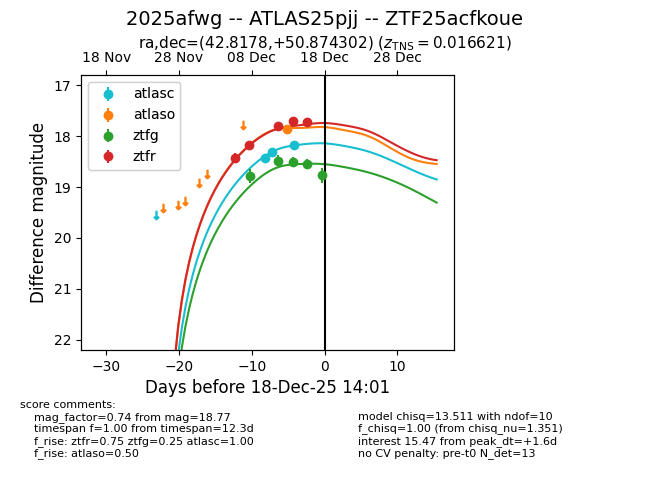
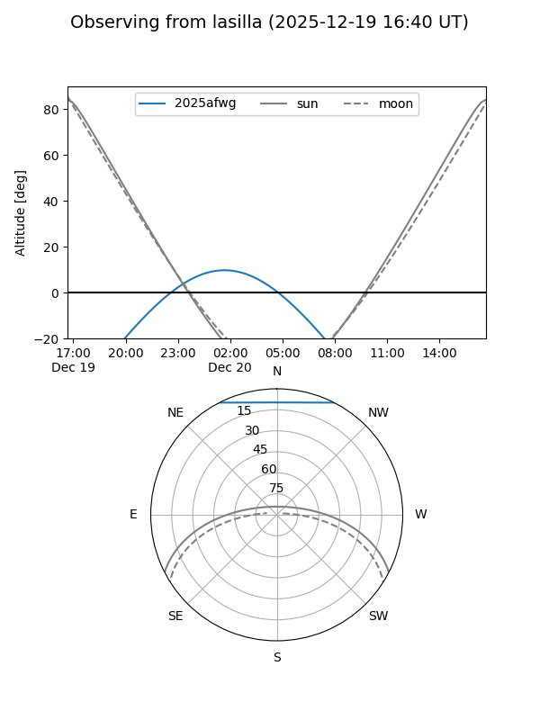
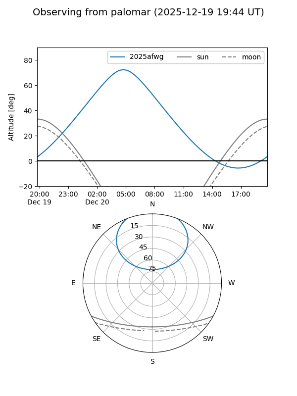
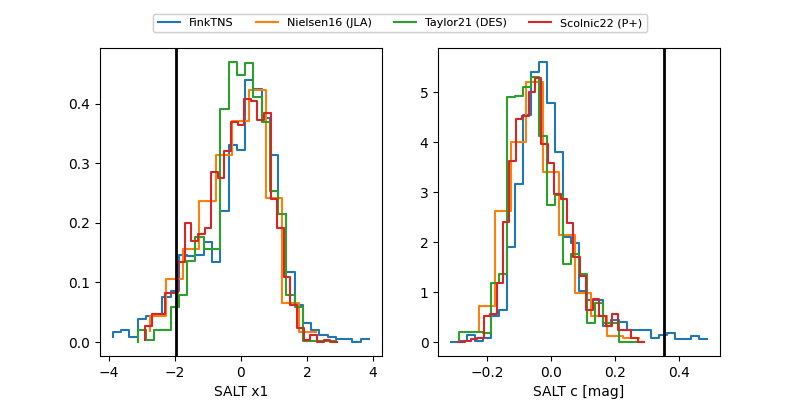

2025afwg
Target 2025afwg at 2025-12-24 16:17
Aliases and brokers:
FINK: fink-portal.org/ZTF25acfkoue
Lasair: lasair-ztf.lsst.ac.uk/objects/ZTF25acfkoue
ALeRCE: alerce.online/object/ZTF25acfkoue
TNS: wis-tns.org/object/2025afwg
YSE: ziggy.ucolick.org/yse/transient_detail/2025afwg
alt names
ZTF25acfkoue (ztf,fink_ztf)
2025afwg (tns,yse)
ATLAS25pjj (atlas)
Coordinates:
equatorial (ra, dec) = 42.8178,+50.87430
equatorial (HMS+DMS) = 02:51:16.28,+50:52:27.49
galactic (l, b) = (141.4698,-7.63324)
Flags:
Photometry:
last atlasc=18.39, atlaso=17.87, ztfg=19.09, ztfr=17.82
4 atlasc, 1 atlaso, 7 ztfg, 8 ztfr detections
Lightcurve

Visibility


Additional plots
